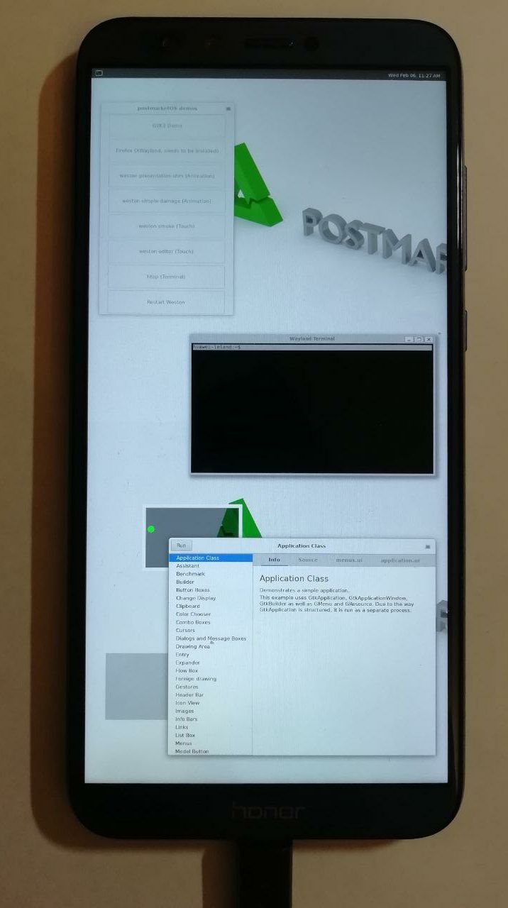

Huawei Honor 9 Lite (huawei-leland)
| This device has been tested with postmarketOS, but its device package has not yet been added to the postmarketOS repositories. This means that it cannot be selected in pmbootstrap. |
|
 Honor 9 Lite with framebuffer and usb net working | |
| Manufacturer | Huawei |
|---|---|
| Name | Honor 9 Lite |
| Codename | huawei-leland |
| Released | 2017 |
| Type | handset |
| Hardware | |
| Chipset | HiSilicon Kirin 659 |
| CPU |
4x 2.36 GHz Cortex-A53 4x 1.7 GHz Cortex-A53 |
| GPU | ARM Mali-T830 MP2 |
| Display | 1080x2160 IPS LCD |
| Storage | 32/64 GB, microSD up to 256 GB (uses SIM 2 slot) |
| Memory | 3/4 GB |
| Architecture | aarch64 |
| Software | |
Original software
The software and version the device was shipped with.
|
Android (EMUI) 8 (EMUI 8.0) |
Extended version
The most recent supported version from the manufacturer.
|
Android (EMUI) 9 (EMUI 9.1) |
Mainline
Instead of a Linux kernel fork, it is possible to run (Close to) Mainline.
|
no |
{kind=link}
Flashing
Whether it is possible to flash the device with
pmbootstrap flasher. |
Broken
|
|---|---|
USB Networking
After connecting the device with USB to your PC, you can connect to it via telnet (initramfs) or SSH (booted system).
|
Works
|
Battery
Whether charging and battery level reporting work.
|
Untested
|
Screen
Whether the display works; ideally with sleep mode and brightness control.
|
Works
|
Touchscreen |
Works
|
| Multimedia | |
3D Acceleration |
Untested
|
Audio
Audio playback, microphone, headset and buttons.
|
Untested
|
Camera |
Untested
|
| Connectivity | |
WiFi |
Untested
|
Bluetooth |
Untested
|
GPS |
Untested
|
| Modem | |
Calls |
Untested
|
SMS |
Untested
|
Mobile data |
Untested
|
| Miscellaneous | |
FDE
Full disk encryption and unlocking with unl0kr.
|
Untested
|
| Sensors | |
Accelerometer
Handles automatic screen rotation in many interfaces.
|
Untested
|
Contributors
Maintainer(s)
How to enter flash mode
With power off, press power und volume-down at the same time, with the usb-cable plugged in.
How to flash
As Huawei changed the partition layout, there is no boot partition anymore. Instead there is a ramdisk and a seperate kernel partition. In order to create the correct images the following steps need to be done:
- Get mkbootimg and unpackbootimg i.e. from here or from archlinux aur repo.
- You can extract the kernel-image and ramdisk from the created boot.img with unpackbootimg.
$ # copy created boot image to current directory $ cp ~/.local/var/pmbootstrap/chroot_rootfs_huawei-leland/boot/boot.img-huawei-leland . $ # extract the created boot.img $ mkdir pmos-boot-huawei-leland $ unpackbootimg -i boot.img-huawei-leland -o pmos-boot-huawei-leland/
- Use the extracted files in the following steps.
- Create ramdisk image:
$ # create new ramdisk image with empty kernel (/dev/null) $ ./android-unpackbootimg/mkbootimg.py --kernel /dev/null --ramdisk pmos-boot-huawei-leland/boot.img-huawei-leland-ramdisk.gz --cmdline 'buildvariant=user' --os_version 8.0.0 --os_patch_level 2018-06-05 -o pmos-leland.ramdisk.img
- Create kernel image:
$ # kernel (with empty ramdisk via /dev/null): $ # make sure boot.img-huawei-leland-zImage is gzipped or do it manually before mkbootimg.py $ mkbootimg.py --kernel pmos-boot-huawei-leland/boot.img-huawei-leland-zImage.gz --ramdisk /dev/null --cmdline 'loglevel=4 coherent_pool=512K page_tracker=on slub_min_objects=12 unmovable_isolate1=2:192M,3:224M,4:256M printktimer=0xfff0a000,0x534,0x538 androidboot.selinux=enforcing buildvariant=user' --base 0x00478000 --kernel_offset 0x00008000 --ramdisk_offset 0x07b88000 --second_offset 0x00e88000 --tags_offset 0x07988000 --os_version 8.0.0 --os_patch_level 2018-12 --pagesize 2048 -o pmos-leland.kernel.img
- Flash ramdisk and kernel with fastboot:
$ fastboot flash kernel pmos-leland.kernel.img $ fastboot flash ramdisk pmos-leland.ramdisk.img
- Flash rootfs to sdcard to boot it
Additional Kernel Configuration
OASES
About
OASES stands for Open Adaptive Security Extensions. Its a Tradmark of Baidu and seems to have something todo with adaptive kernel live-patching. For now there were no disadvantages from disabling it.
-> Device Drivers
-> Huawei Platform Drivers
-> Huawei platform drivers support (HUAWEI_PLATFORM [=y])
In Order to compile the kernel OASES had to be disabled.
Additional Info
The display brightness can be set by writing a value between 0 and 9960 to /sys/class/leds/lcd_backlight0/brightness.
$ sudo -i
# echo 1024 > /sys/class/leds/lcd_backlight0/brightness
Serial debugging (UART)
To get UART working, you'll need to carefully peel off solder mask from the motherboard in TX and RX test points. Then, solder your wires to these test points shown below.
UART specs (common for most HiSilicon SoCs)
- Signal level: 1.8V
- Baud rate: 115200
{kind=link}
Links
- JohnBergago's Huawei_Mediapad_M5_pro_(huawei-cameron)
- penn5 android kernel sources
- Dil3mm4's labyrinth kernel for huawei p8 lite 2017
- pmaports!239 Initial merge request (not merged)